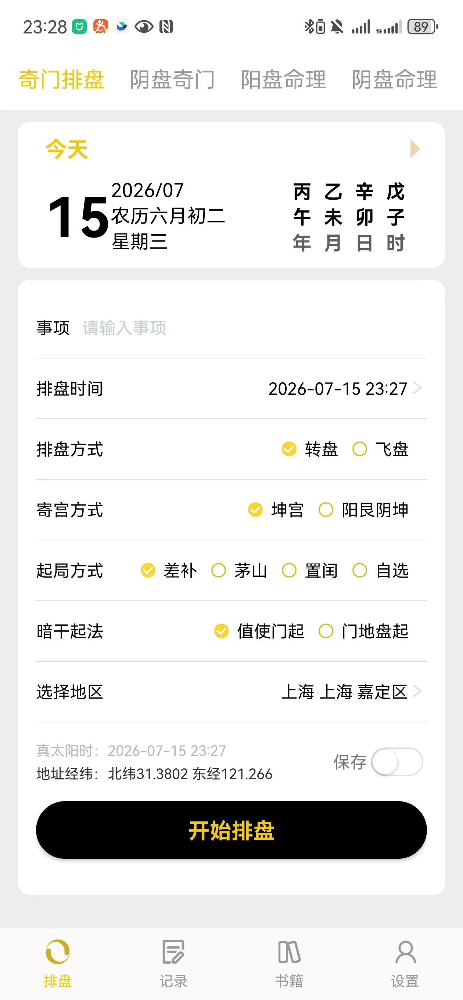
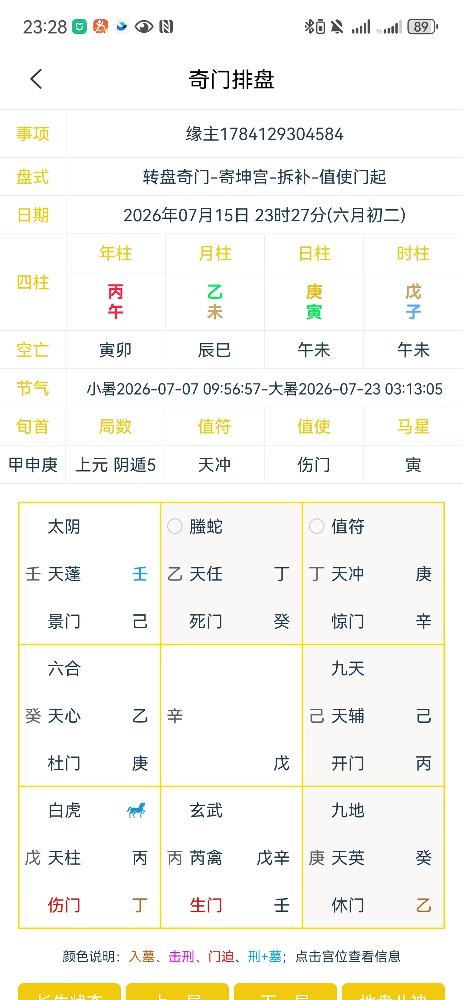

奇门易盘
奇门遁甲智能排盘系统
让帝王之学，触手可及 -- 几秒完成排盘，快速洞察吉凶
创意名称与介绍
目标用户及痛点
面向对易经和传统文化有兴趣、已掌握或正在学习奇门遁甲基础理论的文化爱好者与命理研习者，年龄跨度从大学生到退休人群。
使用场景
用户遇到需要决策的事情（如出行、求财、问病、合作等）时，打开 App 输入事项和时间地点，几秒内生成排盘结果，再结合九宫格局中值符、值使、用神所落宫位进行吉凶判断。
当前痛点
- 01 手工排盘耗时极长，且干支换算、节气定局、九星八门排布任何一步出错全盘皆错，难以保证准确性。
- 02 现有工具大多只支持单一流派，转盘/飞盘、拆补/置闰/茅山等不同起局方式无法自由切换，无法满足不同传承体系的需求。
- 03 排盘结果信息密度高但缺乏重点标注，入墓、击刑、门迫等关键格局需要用户自己逐一排查，判断速度慢，容易遗漏。
价值与意义
效率提升
将传统手工排盘半小时以上的流程压缩到几秒完成，且支持转盘/飞盘、寄宫方式、起局方式、暗干起法等多流派参数自由组合，满足不同传承体系的使用需求。排盘结果自动标注入墓、击刑、门迫、刑加墓等关键格局，用户无需逐宫排查，直接聚焦重点用神，判断效率大幅提升。
文化传承价值
奇门遁甲作为国家级非物质文化遗产，门槛高、学习难，很多人望而却步。通过降低排盘的技术门槛，让更多人能实际使用这门古老术数，有助于传统文化的活态传承与传播，而非停留在书本理论层面。让传统文化在数字时代焕发新的生命力。
产品界面展示
以下为奇门易盘的输入界面与排盘结果界面，已完成核心功能的原型设计。


输入界面亮点
支持事项输入、排盘时间选择、排盘方式（转盘/飞盘）、寄宫方式（坤宫/阳艮阴坤）、起局方式（差补/茅山/置闰/自选）、暗干起法（值使门起/门地盘起）、地区选择等专业参数配置。自动显示农历日期、四柱干支、真太阳时与经纬度信息，降低用户记忆负担。
输出界面亮点
完整呈现四柱干支、空亡、节气、旬首、局数、值符值使、马星等排盘基础信息。核心九宫格采用传统洛书九宫格式排列，每宫包含八神、天干、九星、八门、暗干等多层信息。关键格局（入墓、击刑、门迫、刑加墓）以颜色标注，点击宫位可查看详细信息，兼顾信息密度与可读性。
核心功能特性
多流派支持
转盘/飞盘两大体系，拆补/置闰/茅山等多种起局方式自由组合
自动排盘
输入时间地点即可自动完成干支换算、定局、排星布门全套流程
格局标注
自动标注入墓、击刑、门迫、刑加墓等关键格局，颜色高亮提醒
真太阳时
基于GPS定位自动获取经纬度，精确换算当地真太阳时，排盘更准确
九宫交互
点击任意宫位查看详细信息，神、星、门、干层次分明一目了然
档案管理
排盘结果可保存为档案，支持历史记录查询与事项分类管理
智能排盘流程
从用户输入到生成完整盘局，全部流程自动完成，无需人工干预。
flowchart LR
A["输入事项/时间/地点"] --> B["干支历自动换算"]
B --> C["定节气与阴阳遁"]
C --> D["确定局数与值符值使"]
D --> E["排布九星八门八神暗干"]
E --> F["标注入墓击刑门迫等格局"]
F --> G["生成九宫盘局"]